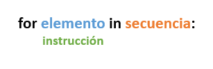
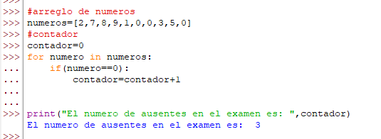
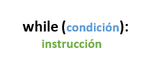
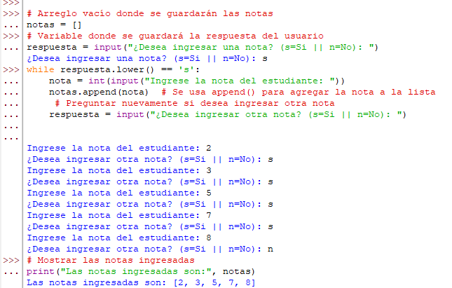
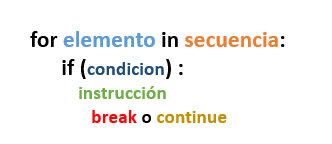
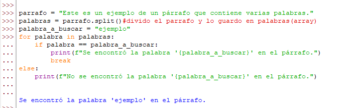
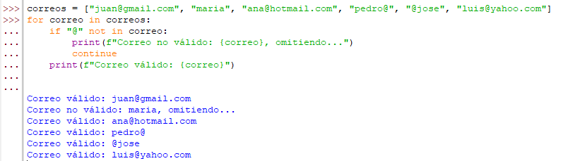
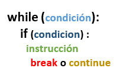
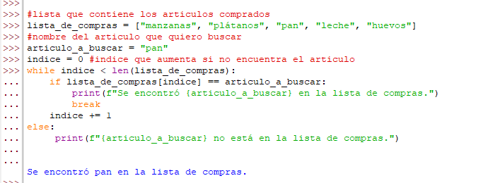

La iteracion en python son los llamados bucles que nos permiten repetir un conjunto de instrucciones varias veces, hasta que se cumpla una condición.
Estructura de control FOR
El bucle for nos permite iterar sobre una secuencia de elementos (listas, tuplas, diccionarios)
Su estructura basica es la siguiente

Ejemplo de uso
Tomemos un ejemplo, en el que tenemos una lista de numeros, los cuales representan la nota de los alumnos que se presentaron a rendir y los que estuvieron
ausentes(nota= 0) y queremos que nos cuente cuantos alumnos estuvieron ausentes osea cuantos numeros 0 hay en la lista, esta es mi condicicion,
para hacer esto tendriamos que recorrer esa lista e ir comparando numero con numero y cuando encuentre uno que cumpla la CONDICION lo contaremos,
usando un contador, acontinuacion se puede observar la resolucion del ejemplo dado.

Video de referencia
Estructura de control WHILE
El bucle while se ejecuta mientras se cumpla una condición.
Su estructura basica es la siguiente

Ejemplo de uso
Tomemos un ejemplo, en el ejercicio anterior ya teniamos las notas escritas en el arreglo, ahora veremos como ir registrando cada nota dentro del mismo MIENTRAS
yo le diga que tengo mas notas por registrar. Acontinuacion se puede observar la resolucion del ejemplo dado.

Video de referencia
FOR con el uso de break y continue
El break se utiliza para salir de un bucle prematuramente mientras que el continue se utiliza para saltar el resto del código en el cuerpo del bucle y pasar a la siguiente iteración.
Su estructura basica es la siguiente

Ejemplos de uso con break
Tomemos un ejemplo, tendremos un parrafo y buscaremos una palabra específica en él, cuando la encuentre se detendra la búsqueda. Acontinuacion se puede observar
la resolucion del ejemplo dado.

Ejemplos de uso con continue
Tomemos un ejemplo, tendremos una lista de correos la cual voy a revisar y omitire aquellos que no tienen un formato válido (no contienen '@') .Acontinuacion
se puede observar la resolucion del ejemplo dado.

Video de referencia
WHILE con el uso de break y continue
El break se utiliza para salir de un bucle prematuramente mientras que el continue se utiliza para saltar el resto del código en el cuerpo del bucle y pasar a la siguiente iteración.
Su estructura basica es la siguiente

Ejemplo de uso con con break
Tomemos un ejemplo, en el que tendremos una lista de articulos y quiero encontrar un cierto articulo dentro de esa lista de compras y una vez que lo encuentre
detener la búsqueda.Acontinuacion se puede observar la resolucion del ejemplo dado.

Ejemplo de uso con continue
Tomemos un ejemplo, en el que registraremos las notas de los estuidiantes pero cuando se ingrese una nota negativa le diremos que es incorrecta pero el programa
no se detiene sino que continua.Acontinuacion se puede observar la resolucion del ejemplo dado.